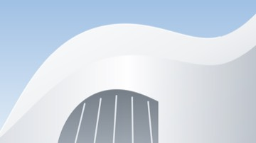

手机顶行、主页胶囊与搜索标签
375×812 手机宽度。依据：当前本地页面实测，Apple Music 搜索流程（搜索、分类）。卡片、底部胶囊、AI 输入框沿用现有规则，本稿只改顶栏、主页标签和搜索流程。
01三个页面共用一种顶栏
现状：主页标题 34/700，AI 标题居中且很小，搜索标题 17/600，三页高度和位置都不同。方案：三页都用 60px 顶行，左侧 34/700 页名，右侧 36px 圆钮（44px 点击区）。主页和搜索右侧是头像；AI 右侧换成「历史」和「新对话」两个圆钮。虚线和蓝底是尺寸标注。
Sill
全部未读待办稍后读收藏
让 AI 成为工作流的一部分
让想法、判断和行动顺畅地连接起来。把 AI 放进已有的工作流程，帮助整理信息、减少重复步骤，并为下一步行动提供依据。

09:20
产品讨论会
至 10:05 · 共 45 分钟
这周的方案，只差最后一个决定
三种方向已经整理好了。比起继续增加功能，我们更想先确认哪些内容应该留下，再围绕这个决定收拢页面结构，完成这周的方案。
主页顶栏不变，标签改为胶囊
AI
询问任何问题
AI标题移到左侧，与主页同大小
- 右侧两个圆钮：历史（时钟）在左，新对话（铅笔方框）在右，间距 4。
- AI 页不放头像，设置仍从主页、搜索的头像进入。
- 没有接入前两个圆钮保持禁用，不伪造历史列表。
搜索
卡片、备注、来源
资讯
 消息
消息笔记
待办
搜索17/600 → 34/700
- 标题与头像的位置、大小与主页一致。
- 去掉「筛选」行（见 03）。
| 项目 | 主页 现状 | AI 现状 | 搜索 现状 | 统一后 |
|---|---|---|---|---|
| 顶行高度 | 60 | 约 40，标题居中 | 约 76 | 60 |
| 页名 | 34 / 700，左 | 约 17 / 600，居中 | 17 / 600，左 | 34 / 700，左，起点 16 |
| 右侧 | 头像 36（点击区 44） | 无 | 头像 36，顶部 16 | 36 圆钮，点击区 44，垂直居中 |
02主页标签：等距，并改为胶囊
现状按 5 格平均分宽，「全部」靠左、「收藏」靠右，其余居中，文字之间的距离是 50 / 39 / 38 / 51。A 方案保留下划线，改为左对齐、间距 24。B 方案改为与搜索相同的实心胶囊，间距 8；主页是灰底，所以未选中的胶囊用白底和细边，与白色卡片同一材质。已选 B。
Sill
全部未读待办稍后读收藏
50393851
让 AI 成为工作流的一部分
让想法、判断和行动顺畅地连接起来。把 AI 放进已有的工作流程，帮助整理信息、减少重复步骤，并为下一步行动提供依据。
09:20
产品讨论会
至 10:05 · 共 45 分钟
现状间距 38–51 不等
Sill
全部未读待办稍后读收藏
24242424
让 AI 成为工作流的一部分
让想法、判断和行动顺畅地连接起来。把 AI 放进已有的工作流程，帮助整理信息、减少重复步骤，并为下一步行动提供依据。
09:20
产品讨论会
至 10:05 · 共 45 分钟
A 下划线间距 24，左对齐
- 最轻，顶部更安静。
- 与搜索的胶囊不是同一种样式。
Sill
全部未读待办稍后读收藏
让 AI 成为工作流的一部分
让想法、判断和行动顺畅地连接起来。把 AI 放进已有的工作流程，帮助整理信息、减少重复步骤，并为下一步行动提供依据。
09:20
产品讨论会
至 10:05 · 共 45 分钟
B 胶囊 · 已选高 32，间距 8
- 与搜索结果的类型行用同一个组件，一个产品只有一种切换样式。
- 每个胶囊有自己的边界，间距一定整齐；放不下时横滑。
- 选中 ink 底白字；未选中 card 白底、line-card 细边、ink 字。
- 顶行 60 + 胶囊行 44，总高度不变。
03搜索流程：首页 → 结果页 → # 条件
参照 Apple Music：搜索首页只有搜索栏和分类卡，没有筛选。点分类卡，分类作为标签放进搜索栏，并进入结果页；输入文字也进入结果页。结果页是新的一页：顶部是搜索栏和关闭钮，下面一行类型胶囊，左右滑动内容区可切换类型。
搜索
卡片、备注、来源
资讯
消息笔记
待办
日程媒体
提醒
附件
① 搜索首页无筛选
- 删去「筛选」行和状态、标签展开区。
- 分类卡 2 列、间距 12、圆角 12，比例由 16:9 改为 16:10，名字更易读。
- 蓝框表示点按「待办」，进入 ②。
待办
确认第二版首页的筛选顺序
今天 18:00 · 产品讨论会
回复林舟关于方案的邮件
明天
整理本周读过的三篇文章
周五
发出设计评审邀请
已于周一完成
② 点分类后分类进入搜索栏
- 新页面，不显示大标题和头像；顶行是搜索栏 + 44 圆形关闭钮。
- 「待办」是搜索栏里的黑色标签，结果只显示待办卡。继续输入文字可在待办里搜。
- 标签已经表达类型，因此这页不显示类型胶囊行。
- 光标在标签后按删除键，或点 ✕，标签移除，回到 ③。关闭钮回到 ①。
AI
全部资讯消息笔记待办日程媒体
让 AI 成为工作流的一部分
让想法、判断和行动顺畅地连接起来。把 AI 放进已有的工作流程，帮助整理信息、减少重复步骤，并为下一步行动提供依据。
关于 AI 助手的接入顺序
外部助手先通过 Webhook 把结果写回 Sill，内置助手放到后面。先定清回写方式和权限边界，再决定界面放哪些入口。
注意力，也需要一点留白
把一部分时间还给不被打断的阅读，让 AI 处理其余部分。整理、归类和提醒都交出去，留下的注意力用来想清楚一件事。
左右滑动切换类型
③ 输入文字后结果页
- 按回车或停止输入后进入此页；输入法组词时不切换。
- 类型胶囊一行：选中 ink 底白字，其余浅灰底；间距 8，可横滑。
- 内容区左右滑动 = 切换胶囊，胶囊同步滚到可见位置。每个类型各自保留滚动位置。
- 命中词加粗，不加底色。不显示结果数量。
AI
全部资讯消息笔记待办日程媒体
让 AI 成为工作流的一部分
让想法、判断和行动顺畅地连接起来。把 AI 放进已有的工作流程，帮助整理信息、减少重复步骤，并为下一步行动提供依据。
注意力，也需要一点留白
把一部分时间还给不被打断的阅读，让 AI 处理其余部分。整理、归类和提醒都交出去，留下的注意力用来想清楚一件事。
不是所有信息都值得被处理
让 AI 先挑出值得看的部分。剩下的按来源和时间收好，需要时再找回来，不必每一条都当场处理，也不怕错过。
④ 向左滑一页切到「资讯」
- 只显示资讯卡，卡片样式与主页相同。
- 没有结果的类型不显示胶囊，避免滑到空页。
- 点卡片打开详情抽屉，关闭后回到这页原位置。
AI #
状态
- #未读
- #收藏
- #稍后读
标签
- #产品
- #设计评审
⑤ 输入 #弹出条件列表
- 在搜索栏任意位置输入 #，栏下出现列表：先状态（沿用现有的未读、收藏、稍后读），后标签；继续输入可按名称过滤，如 #设。
- 点选或回车后，条件变成搜索栏里的蓝色标签，与分类的黑色标签区分。
- 标签组只列已有标签；没有标签时不显示这一组。
- 列表浮在结果上方，不推开结果；点空白处或删掉 # 收起。
资讯#未读AI
让 AI 成为工作流的一部分
让想法、判断和行动顺畅地连接起来。把 AI 放进已有的工作流程，帮助整理信息、减少重复步骤，并为下一步行动提供依据。
注意力，也需要一点留白
把一部分时间还给不被打断的阅读，让 AI 处理其余部分。整理、归类和提醒都交出去，留下的注意力用来想清楚一件事。
⑥ 组合条件分类 + # + 文字
- 分类标签、# 标签、文字可同时存在，结果同时满足。
- 栏里有分类标签时不显示类型胶囊行（同 ②）。
- 标签过多时搜索栏内部横滑，栏高不变。
- 删除键从后往前逐个删除标签。
| 现在的规则 | 改为 |
|---|---|
| 搜索页标题 17/600，搜索栏边距 20 | 标题 34/700，边距 16，与主页对齐 |
| 结果顶部有「筛选」，状态和标签放在展开区 | 删除筛选；类型用分类标签或类型胶囊表达，状态和标签用 # 输入 |
| 输入后在同一页即时显示结果 | 进入新的结果页；顶部搜索栏 + 关闭钮，类型胶囊可左右滑动切换 |
| 点分类卡在本页筛选 | 分类成为搜索栏里的标签，进入结果页 |
已确认
1. 搜索去掉筛选，状态和标签改为在搜索栏输入 # 选择。
2. AI 页右侧放「历史 + 新对话」，不放头像。
3. 搜索类型和主页标签都用实心胶囊（02 的 B 方案），两处是同一个组件；主页未选中项用白底细边，搜索页用浅灰底。
2. AI 页右侧放「历史 + 新对话」，不放头像。
3. 搜索类型和主页标签都用实心胶囊（02 的 B 方案），两处是同一个组件；主页未选中项用白底细边，搜索页用浅灰底。